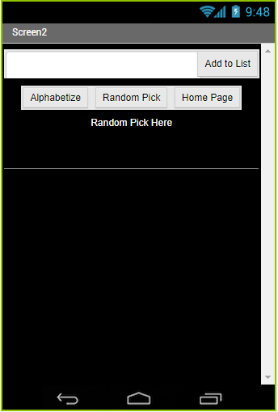

The following works are projects done in my Computer Science class. This will ultimately display
the progression of my programming skills through out the school year.
Scratch Project #1
From the start of the year, our computer science class has been working on
several projects on Scratch. One of the projects that I am extremely proud
of is the one that I and my partner, Pedro, worked on. The name of our game
is called Dat Boi Game but the game we created was a remix from a game
called "Save the MiniFigs".
This is how the start screen looks like when the green flag is pressed.
I know that is does not look impressive but it was one of the first projects
that I had to work with someone and do on my own.
The code on the top controls the sprite using the mouse. When the score reaches
thirty, the sprite begins to rotate around the mouse pointer. It was fun coding the game but some issues arose
when programming the part in which the sprite would revolve around the mouse.
Scratch Project #2: Dank Meme Quest
The final project for Scratch was between a story or a game and my partner, David,
and I decided to create a game and its name is Dank Meme Quest. It was a difficult
game to create due to the complexity of changing the backgrounds and implementing the enemies.
The game opening is located on top left. The game was difficult to create (as stated
from the top) but it was a learning experience as I improved my skills in "writing"
broadcast code. I also improved my skills in adding abstraction code to make the
unnecessary sprites go away. The code next to the opening of the game displays
how much code it was needed in order to program one sprite. Although there were multiple
mistakes made during the coding of teh game, I learned quite a bit about how the blocks of
code work with one another in order to execute the overall program.
App Inventor Project: The Budgeting App
After the use of Scratch to build our basic understanding of coding, we began to
learn to use App Inventor to expand our knowledgeon coding. We had minor assignments here and there but the final
project assigned to us was to build an app that had a purpose. My partner, Robert Olivares, and I decided to program
a budgeting app because of its usefulness and it also seemed easy to code (which we were kind of wrong about). The
bottom displays how each of of the screens look. From left to right, the first screen is the home page, the second
screen is the listing page, teh third screen is the calculator, and the final screen is the help page in case the
user did not know how to use the listing app. The link to the code is as follows Budget App.

The hard part about coding the app was the alphabetizer button because I had trouble
writing the code organizing the items. The code on the bottom displays how the code segment works but some of the
code is not originally mine. Some of teh code comes from a youtube video called "APP inventor #10 List Sorting”
posted by “Seongsu Lee”. I learned how the Tiny DB works and how a list works together.
Python Project #1: The Rebirth of Albert Einstein
The first project incorporating typed lines of code is this one.
We used the site repl.it in order to complete this project with a partner (mine was Dianne). It was fairly simple
to code because it was just printing out statements after an input placed by the user was inserted. The user had two
choices to choose from when the story would bridge out from that point. The link to the interactive story is The Rebirth of Albert Einstein.
The overall project was fun to create and I learned how to use raw_inputs in order for the user to have some
control over what would happen next.
The code on top is how it looked like once the program was done and on the right side
displays the story once the code was ran.
Python Project #2: Math Help for Students
The next project that was assigned was a choice among a group of possible programs
and in the end, my partner, Cecilia, and I decided to create a program that would help students in mathematics ranging
from Algebra 1 all the way to Calculus. The code was simple when creating it because it followed the same principle as
the interactive story. Surprising for me was that our code incorporated a double algorithm as when one function was
called, that function would call another. The example for this is when the calculus function was selected, it would call
in the other calculus function that contained all the questions for the code.
I learned how to improve my coding skills when it comes to incorporating multiple
algorithms and I learned that using while loops makes the program more efficient and easier on the user if he/she wants
to keep answering a question until he/she gets it right. It was difficult to work on it due to the several lines of code
that had to be typed.
Python Project #3: Image Modifying Code
The Image Modifying code was one of the harder projects to code because the idea
of manipulating images through python seemed foreign to me. Some of the code I used was from a website called "Mouse
vs. Python" under the sub categories of added border and color change. This code was exttremely helpful and in order to
change the code to make it more personal, I changed some variables, combined the two by removing and adding components
such as the part about saving the input image. I combined the output in order for the border to be added right
after the input changed color to black and white.
The code on top was the product of the combined efforts of Jonathon Vy and mine.
Although it seems simple, I spent countless hours on trying to change the way the input system worked and how to combine
the codes together. I actually learned how the color changes from the old picture to the new one and I am still figuring
out how the border is added to the picture (I believe the ImageOps simplifies the code when the border is added).


 Python Project #1: The Rebirth of Albert Einstein
Python Project #1: The Rebirth of Albert Einstein